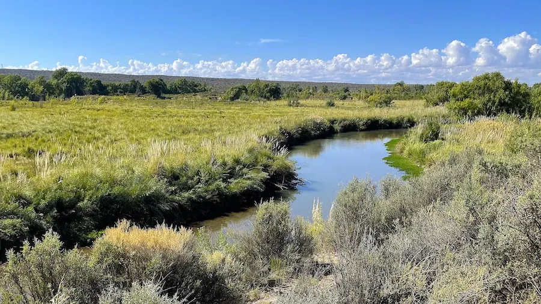
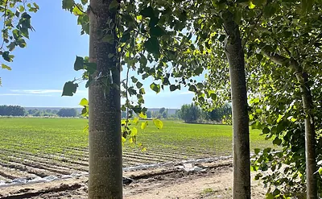
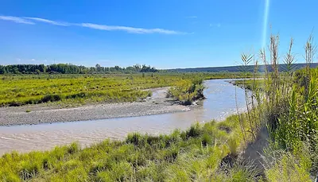
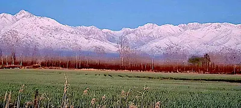

Tunuyan, Mendoza
¡Agua, agua y más agua! Finca con renta sobre el río, con vista a los Andes y vertientes minerales
¡Potencial turístico, Valle de Uco!

En 20 años vendiendo propiedades en Mendoza nunca vi una finca con tanta agua. El agua es oro en Mendoza, y esta increíble finca con renta es un hallazgo poco común. Una parte del campo está con ajo.
La tierra no está perdida en el medio de la nada: está a solo 5 kilómetros del centro de Tunuyán y a 2 kilómetros de la famosa Ruta 40, la ruta del vino que aparece en gorras, remeras y recuerdos de las tiendas turísticas.
La propiedad linda con el río Tunuyán al norte, y con el amplio arroyo de aguas claras llamado Arroyo San Carlos al este y al sur.
{kind=link}

Hay muy buen riego por canal para los cultivos, y la propiedad tiene además una vertiente mineral registrada que corre permanentemente, las 24 horas. Los dueños hicieron un análisis de agua que muestra buena calidad mineral y que podría embotellarse como agua de vertiente.
Actualmente hay 10 hectáreas (25 acres) con producción de ajo. Los dueños arriendan esa tierra a productores ajeros por US$1.500 por hectárea por año, es decir un total de US$15.000 anuales. El contrato es año a año.
Tienen previsto nivelar otras 10 hectáreas (25 acres) para arrendar también, lo que duplicaría el ingreso por arrendamiento. La fertilidad del suelo es muy buena y otras hortalizas de estación también andarían bien en esta tierra.
{kind=link}

También tienen planes de construir una represa grande, algo mayor que una pileta olímpica, para facilitar aún más el riego.
La propiedad tiene hermosas vistas al río, al Arroyo San Carlos y a la cordillera de los Andes. Hay una linda barranca sobre el río que sería un lugar excelente para construir una casa o dos, cabañas turísticas y demás.
Hay grandes y hermosos álamos plantados a lo largo de los canales, y los dueños plantaron además árboles nuevos que crecen rápido.
{kind=link}

Parte de la tierra está con flora natural y los dueños actuales no piensan arar todo, sino conservar un sector en estado natural con plantas autóctonas. Hay nutrias de agua dulce en los arroyos y distintos tipos de peces en el río. En la propiedad misma hay zorros, liebres, aves autóctonas y otros animales silvestres. Hay lechuzones grandes que anidan en las barrancas sobre el río.
NOTA PERSONAL: recorrí esta propiedad a pie y en camioneta durante unas horas con los dueños, y quedé maravillado por su belleza, su potencial y su agua.
Vertiente mineral permanente y uno de los canales de riego
El resto de las fotos
10 fotos más de esta propiedad. Toque cualquiera para verla en grande.
{kind=link}
{kind=link}
{kind=link}
{kind=link}
{kind=link}
{kind=link}
{kind=link}
{kind=link}
{kind=link}
{kind=link}